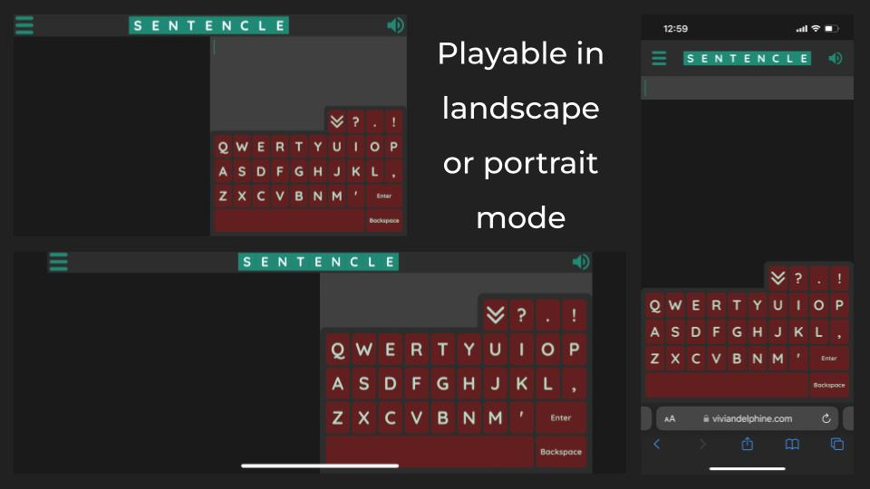
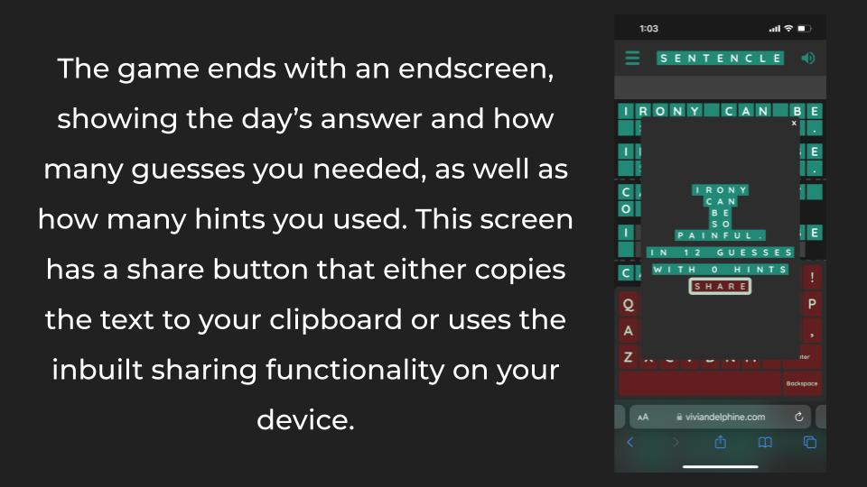

I wanted to teach myself JavaScript (after having used Java and C in the past) in order to create an interactive webpage people could actually use. The mechanics of the game were inspired by stretching Wordle into a sentence format and adjusting the rules to not be too easy or difficult.
I started with a simple HTML file with some JavaScript and I created the most basic playable game to test on some friends and family. Everyone said it was far too dificult and barely had the patience to finish a single game, which told me I needed to change the ruleset. I had the game give more information back to the user and continued adjusting the game until people started to enjoy it.
I then worked on the layout and made the game compatible with phones. I learned about the challenges with of touch screens and I added some extra features such as sound effects and a win screen that allowed players to share the game with family and friends.
I then came up with one five word sentence for every day of the year. It took awhile to find sentences that would be a satisfying answer to the game, while having the correct number of words and being gramatically complete. I searched idioms, movie quotes, and song lyrics. With the list of sentences and a layout redesign, the game was complete.
Every day, the answer is a five word sentence. When you make a guess, the game takes the beginning of your guess, up until the first incorrect character (a character is a letter, space, or punctuation mark), and gives back every correct character from the beginning of your guess in the order that they appear in the sentence. You can then continue guessing until you get the answer and if you're really stumped, you can ask for a hint.
© 2024 Nadine Jackson